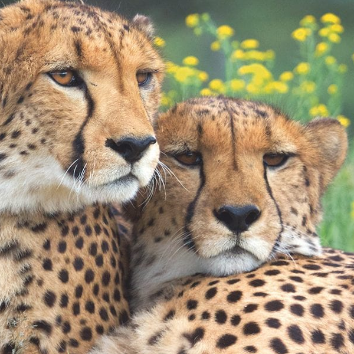
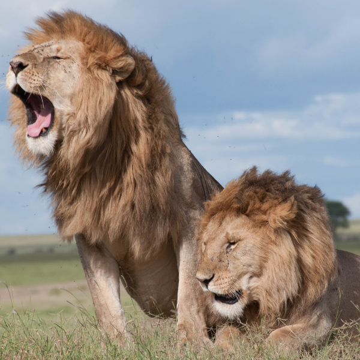
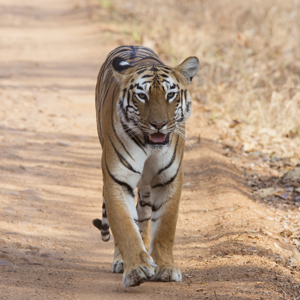

Domestic Cats
~First Year Web Design Project 2020 based on Wild Life Cats~
Wildcat is an ancestor of domestic cat. There are 22 subspecies of wildcats that can be found in Africa, Europe and Asia. Wildcats inhabit forests, wooded grasslands, semi-deserts, areas near the marshes, coasts, alpine meadows, savannas and steppes. Their number in the wild is rapidly declining due to interbreeding with domestic cats (created hybrids are not genetically pure wildcats), habitat loss and traffic accidents. Despite these factors, wildcats are still not on the list of endangered species. Wildcat can reach 29 to 46 inches in length and 7 to 18 pounds of weight, they are a carnivore (meat-eater). Their diet is based on rodents, birds, reptiles, insects and spiders. It occasionally hunts large prey such as rabbits, small deer and antelopes. Wildcat eats entire prey, including the feathers, fur and bones.
The Cats
Learn more
  Safari
In this modern day and age, there are African safaris suited to people of all ages - from small kids to teenagers to young globetrotters and grandparents. The safari travel industry is well-established across Southern and East Africa with many experienced tour companies offering excellent trips to amazing destinations.Action packed itineraries ensure that you see as much of Africa as possible on your trip and don't miss out on travel highlights along the way. Visit a well-selected mix of famous safari destinations and hidden wildlife gems, making for a more rewarding and memorable journey through Africa.
What is a Safari ?
Safari's are for travelers who want a hands-on experience of Mother Nature. Either setting up your campsite or helping build a campfire whilst surrounded by breathtaking landscapes and scenery. Safaris have largely developed into holiday trips that actually benefit the wildlife of Africa, by supporting local conservation efforts and wildlife sanctuaries. As opposed to hunting the animals, visitors get to encounter them and help make a difference in protecting the species. Safari companies either actively contribute towards conservation projects or help generate tourism revenue which is used to manage wildlife projects and game reserves.
Get to see Africa's wild animals in the flesh, while you still can (many are endangered)! Watch wild animals roaming freely in the bush, falling asleep to the sounds of mother nature. Go to birding havens to spot rare species, experience the thrill of tracking wildlife on foot and searching for nocturnal animals in 4x4 safari vehicles.An African safari gives you the chance to observe rare and mysterious animals in the wild, whilst immersing yourself in the wilderness.
To learn about other safaris click here: Learn more